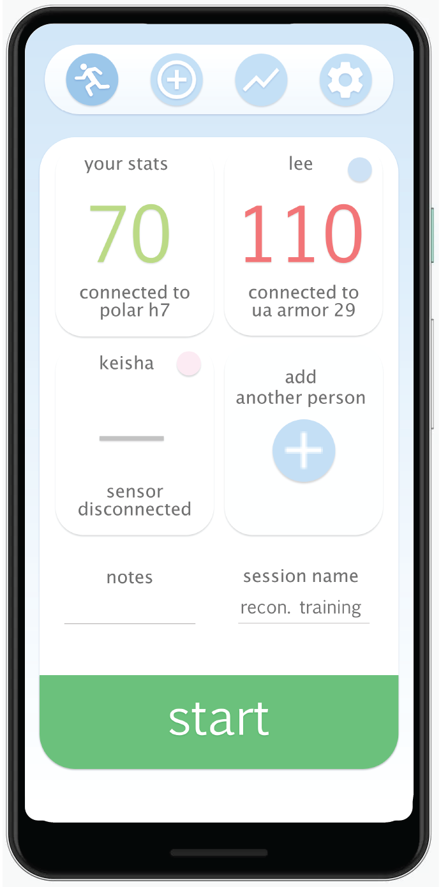
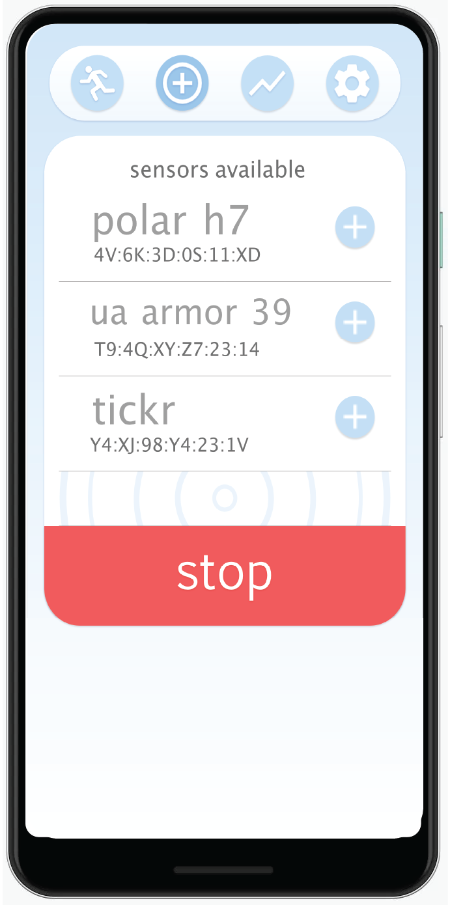

the design...



aware is a tool for air force commanders to monitor airmen heartrate to provide more personalized and effective training.
android programming, ui design, artistic direction, lab-testing, prototyping, and user analysis.
an application prototype which can support up to 4 bluetooth le heartrate-monitoring sensors, store session information, and share it using an internet connection or usb.
why it's useful...
the design...
what it does...
link up to 4 different bluetooth le heartrate sensors.
create notes for sessions, easily rename them, and share them as compressed .csv files for post-analysis.
use simple badges to recognize sensors so the app is easier to use while training.
view each airman's heartrate in real-time throughout the training session. colors indicate different heartrate zones.
because aware works with bluetooth le, it is compatabile with many different sensor products—including sensor products from the popular brands included below.

how it came to be...
airmen in training sessions demoed my app over a period of three months. i took the feedback and iterated through prototypes until the app was error-free and able to do everything the commanders needed it to do.
i wanted the main screen to effectively convey the information that was most important—the heartrate info and zone.
adding sensors and airmen's information is designed to be as inuitive as possible by using familiar icons and buttons.